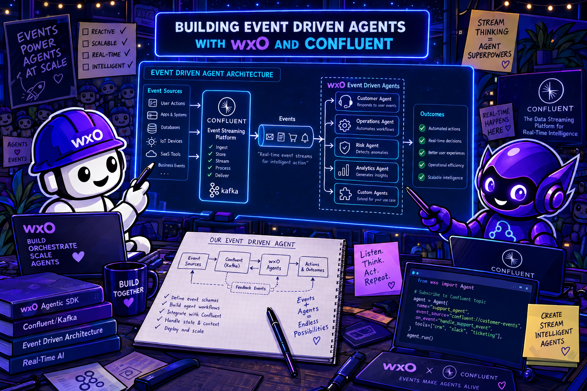
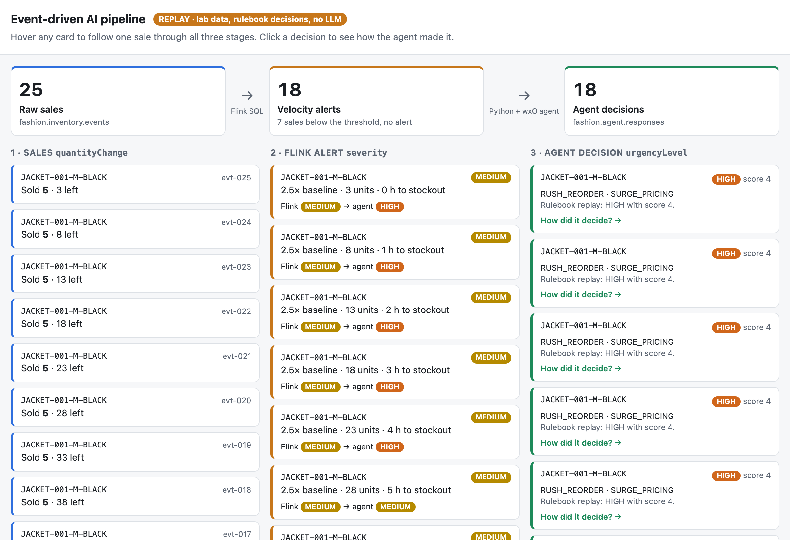
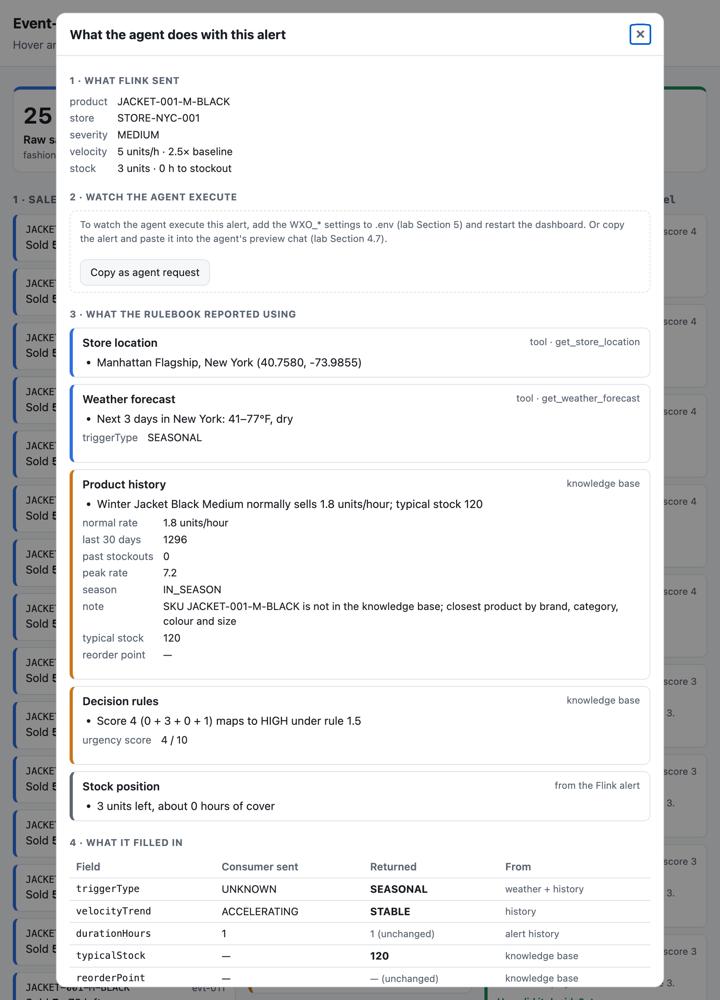

Event-Driven AI Agents with Confluent Cloud¶

Duration: 95–105 minutes · Difficulty: ⭐⭐⭐⭐
Before you start¶
This lab assumes you completed Setup & Environment.
You should already have the bobchestrate-confluent/ workspace open in Bob IDE, a
Python virtual environment, the ADK installed, and orchestrate agents list working.
You also need a Confluent Cloud account. Don't create it yet — that's Section 2.1, and the order matters: a promo code has to go in at the right moment so you're never asked for a credit card. The codes are in that section.
Install the lab dependencies¶
Open a terminal in Bob IDE (Terminal → New Terminal) and run:
This installs confluent-kafka, ibm-watsonx-orchestrate, python-dotenv, jsonschema
and the rest, at the exact versions pinned in uv.lock.
Create your .env file¶
Leave the values as placeholders for now — you'll fill in the Confluent credentials in Section 2 and the watsonx Orchestrate credentials in Section 5.
Ready to start when
-
bobchestrate-confluent/is open in Bob IDE and WXO Agent Architect appears in the mode selector -
uv sync --lockedcompleted without errors -
.envexists infashion-inventory-consumer/ -
orchestrate agents listreturns without error
Overview¶
This lab teaches you to build an event-driven AI pipeline — a pattern where real-time streaming events automatically trigger AI agent analysis. You'll combine two cloud platforms: Confluent Cloud for stream processing and IBM watsonx Orchestrate for AI-powered decision-making.
The business scenario: a fashion retailer needs to detect when a product is selling abnormally fast and immediately get an AI-driven inventory decision — reorder, surge price, or monitor — before stock runs out.
What You'll Build¶
| Component | Technology | What it does |
|---|---|---|
| Kafka topics | Confluent Cloud | Carry raw inventory events and velocity alerts |
| Velocity spike detector | Flink SQL | Identifies products selling 3× faster than baseline |
| Python consumer | confluent-kafka + httpx | Reads alerts, calls the wxO agent, publishes decisions |
| Inventory analysis agent | watsonx Orchestrate | Reasons about urgency, recommends actions, outputs schema-valid JSON |
| Knowledge base | wxO KB | Gives the agent decision rules, product history, and guardrails |
All Python code is pre-built in retail-inventory-optimization/. Your job is to wire it together, configure the platforms, and use Bob to create the agent.
Why This Pattern Matters¶
| Use event-driven AI when... | Use a chat agent when... |
|---|---|
| Events happen continuously and at volume | A human initiates each request |
| Decisions must be made in near-real-time | Response latency of seconds is acceptable |
| AI enrichment feeds a downstream system | Output is for a human to read |
| You need audit trails of every AI decision | Conversation context is the primary state |
Using Bob for this lab¶
Bob (in WXO Agent Architect mode) handles the watsonx Orchestrate side — creating tools, a knowledge base, and the agent. The prompts in Section 4 are written to be copy-pasted directly.
| When you're on… | Ask Bob… |
|---|---|
| Section 4.1 — Store Location Tool | Copy-paste the prompt block provided in the section |
| Section 4.2 — Weather Forecast Tool | Copy-paste the prompt block provided in the section |
| Section 4.4 — Knowledge Base | Copy-paste the prompt block provided in the section |
| Section 4.5 — Agent | Copy-paste the prompt block provided in the section |
| Section 5 — Consumer config | "Show me which environment variables the orchestrate_client.py needs" |
| Debugging auth errors | "My WXO_API_KEY is correct but I get 401 — what could cause this?" |
| Debugging schema validation | "The agent response is failing validation on reasoning — what does the schema require?" |
Section 0 — What is Event-Driven AI? (5 min)¶
The pattern¶
Traditional AI workflows are request-response: a human asks a question, the agent replies. Event-driven AI flips this: an event in a stream triggers the agent automatically, with no human in the loop.
This unlocks AI automation at scale. Inventory spikes, fraud signals, equipment anomalies, sensor readings — any event stream can be enriched with AI reasoning.
The three roles in this pipeline¶
Stream processor (Flink SQL) — Watches the raw event stream and detects patterns. Stateless, deterministic, fast. Produces structured alerts. Does not make judgment calls.
AI agent (watsonx Orchestrate) — Receives a structured alert, reasons about it using knowledge and tools, and returns a structured decision. Slow relative to Flink (seconds), but capable of nuanced judgment.
Bridge (Python consumer) — Connects the two worlds. Reads Kafka alerts, calls the agent synchronously, validates the response against a JSON schema, and publishes the enriched result to a new Kafka topic.
What you learned¶
- Event-driven AI separates fast pattern detection from slow AI reasoning
- A Python bridge connects streaming infrastructure to an AI agent
- Schema validation at the output boundary is essential for downstream reliability
Section 1 — Architecture Overview (5 min)¶
┌──────────────────────────────────────────────────────────────────┐
│ Confluent Cloud │
│ │
│ Python Producer ──▶ fashion.inventory.events ──▶ Flink SQL │
│ (test CSV data) (raw POS events) (velocity │
│ spike │
│ detector) │
│ │ │
│ fashion.velocity.anomalies
│ │ │
└──────────────────────────────────────────────────────────┼───────┘
│
Python Consumer reads
│
▼
┌─────────────────────────┐
│ watsonx Orchestrate │
│ │
│ Fashion Inventory │
│ Alert Processor │
│ │
│ Tools: │
│ - get_store_location │
│ - get_weather_forecast │
│ │
│ Knowledge Base: │
│ - inventory-alert- │
│ knowledge │
└──────────┬──────────────┘
│
Structured JSON decision
│
┌──────────────────────▼───────────────┐
│ Python Consumer validates + publishes │
│ ▶ fashion.agent.responses (Kafka) │
└───────────────────────────────────────┘
Three Kafka topics¶
| Topic | Producer | Consumer | Contents |
|---|---|---|---|
fashion.inventory.events |
Python test producer | Flink SQL | Raw POS sale events |
fashion.velocity.anomalies |
Flink SQL | Python consumer | Velocity spike alerts |
fashion.agent.responses |
Python consumer | Downstream systems | AI-enriched decisions |
See the flow before you build it¶
The lab includes a dashboard that shows all three topics side by side, one column per stage. Start it now, before anything is built, to see the finished pipeline running.
1. Get the dashboard script. In a Bob IDE terminal:
Or download pipeline_dashboard.py and move
it into fashion-inventory-consumer/ yourself — it must sit next to .env.
2. Start it in replay mode. Nothing exists in Confluent or wxO yet, so --replay runs
the pipeline you're about to build on your laptop, using the lab's own files:
Nothing in the replay is made up. It reads the same files the real pipeline uses:
| Stage | Replay uses | Real pipeline uses |
|---|---|---|
| Sales | test_winter_jacket_spike.csv |
The same CSV, sent by the producer |
| Alerts | The rule from velocity_anomaly_detection.sql |
That query, running in Flink |
| Store | store_locations.csv |
The get_store_location tool, reading that CSV |
| Weather | Today's Open-Meteo forecast | The get_weather_forecast tool, calling Open-Meteo |
| History | product-history-baselines.csv |
The knowledge base |
| Decision | The rules in decision-rules.pdf, applied exactly |
The LLM agent, reading those rules |
Only the last row differs. Replay mode shows what the rulebook decides; in Section 6 you'll see what the agent decides, and compare the two.
3. Open http://localhost:8050 in your browser. Within about 30 seconds the run completes and looks like this:

Read it left to right:
- Sales arrive in the first column. The faded ones sold a single unit, so Flink lets them through without an alert.
- Velocity alerts appear in the middle for every 5-unit sale. Flink rates them all
MEDIUM— it only looks at the size of the sale. - Decisions arrive a few seconds later on the right. Each alert card then shows Flink → decision side by side. Flink never changes its mind; the rulebook does, because it also weighs stock, stock value, season and weather.
- Hover over any card to light up the same sale in all three columns.
4. Click any decision to see how it was reached. It shows what was looked up — store, weather, product history — and the score each rule added. Notice that the rating doesn't simply climb as stock runs down: rule 1.3 adds a point while the remaining stock is worth over $5,000 and takes it away once it isn't. Rules are precise, and sometimes awkward. You'll see whether the agent follows them to the letter.
That's the whole lab on one screen. 5. Stop it with Ctrl+C in the terminal. From
Section 3.2 onwards you'll run it against your real topics
and watch each column fill as you build that stage.
Port 8050 already in use?
Run uv run pipeline_dashboard.py --replay --port 8051 and open
http://localhost:8051 instead.
Key files in retail-inventory-optimization/¶
retail-inventory-optimization/
├── fashion-inventory-consumer/ # Python applications (pre-built)
│ ├── .env.example # ← You'll fill this in Section 5
│ ├── produce_inventory_events.py # Test data producer
│ ├── consume_velocity_alerts.py # Basic consumer (Section 3)
│ ├── consume_velocity_alerts_with_agent.py # Agent consumer (Section 6)
│ ├── orchestrate_client.py # wxO HTTP client + token management
│ ├── agent_payload_builder.py # Alert → agent request transformer
│ ├── agent_response_producer.py # Kafka publisher for agent responses
│ └── response_validator.py # JSON schema validator
│
├── fashion-inventory-setup/
│ ├── schemas/ # Three JSON schemas
│ │ ├── fashion-inventory-event.schema.json
│ │ ├── velocity-anomaly-alert.schema.json
│ │ └── agent-response.schema.json
│ ├── sql/
│ │ └── velocity_anomaly_detection.sql # Flink SQL query
│ └── data/
│ ├── test_winter_jacket_spike.csv # Test data
│ └── store_locations.csv # Store location data for tool
│
└── labs/part2-watsonx-orchestrate/
└── inventory-alert-demo-knowledge/ # Knowledge base documents (6 files)
Section 2 — Confluent Cloud Setup (20 min)¶
You need a Confluent Cloud account, an environment with three topics, a Schema Registry, and a Flink compute pool.
2.1 Create your account and redeem the workshop promo code¶
Promo codes — enter these instead of a credit card
| Code | What it does | When to enter it |
|---|---|---|
CONFLUENTDEV1 |
Skips payment entirely for 30 days | At the payment screen, step 4 below |
KAFKA101 |
Adds $25 of free usage | After your cluster exists — see Redeeming the code later |
Both codes are published by Confluent for people working through their tutorials — see Get Started with Apache Kafka on Confluent Cloud, which also walks the sign-up screens one by one if anything below looks different.
CONFLUENTDEV1 only works on a brand-new account
It's restricted to first-time Confluent accounts. If you've signed up before, it
will be rejected and you'll be asked for a payment method — ask your instructor for
the event code instead. KAFKA101 works either way.
Confluent Cloud requires a payment method before you can create a cluster — unless you redeem a promo code first. So the order of these steps matters.
- Go to the Confluent Cloud signup page and click Start Free. Signing up itself asks for no card.
- Confirm your email address via the link Confluent sends you, then work through the onboarding screens.
- Confluent offers to set up a first cluster. Keep the default choice, or pick your preferred cloud provider, region and availability — it doesn't matter for this lab. If you're asked "Do you need a private network?", answer No.
- You now reach the payment screen. Do not enter card details. At the bottom,
find "Have a promo code?" and click Click Here — then enter
CONFLUENTDEV1. - When asked how you want to start, choose Stream your own data.
No verification email? (step 2)
Check your email address for a verification link — it is sent to new users only. If you already have an account and cannot sign in, reset your password or contact Confluent support for assistance.
The promo code link is easy to miss
On the payment screen the code goes behind a small "Have a promo code?" → Click Here link at the bottom of the form — not in the card fields. If you don't spot it, you'll start filling in card details instead. Scroll down and look for it.
Redeem the code before you create a cluster
If you click past the payment screen without entering the code, Confluent will block cluster creation until a payment method exists. You can still fix it — see Redeeming the code later — just do it before Section 2.2.
Onboarding may create a cluster for you
That's fine. In Section 2.2 you create the environment and cluster this lab uses by name — you can leave the onboarding cluster alone, or delete it afterwards to save credit.
Redeeming the code later¶
Use this to add KAFKA101 for the extra $25, or to recover if you clicked past the
payment screen without entering CONFLUENTDEV1:
- In the Confluent Cloud console, open the Settings menu (upper-right corner)
- Choose Billing & payment
- Select the Payment details & contacts tab
- Click + Promo code and enter the code
- Your promotional balance appears on the same page
On the New cluster screen, after you click Continue, enter the promo code before you click Launch.
What you get
New accounts also receive $400 of free credit, valid for 30 days or until the credit runs out — whichever comes first. The workshop uses a tiny fraction of that. Note that prepaid cards are not supported by Confluent billing, which is another reason to use the promo code.
Checkpoint
Settings → Billing & payment → Payment details & contacts shows a promotional balance, and no credit card is on file. You're ready to create resources.
2.2 Create your Cloud Environment and cluster¶
- Log in to confluent.cloud
- Click Add cloud environment → name it
retail-inventory-bootcamp - Inside the Cloud Environment, click Add cluster → choose Basic
- When asked "Do you need a private network?" — answer No
- Select a cloud provider and region — select
Europe (Frankfurt), then name the clusterretail-inventory-cluster - Note the Bootstrap server URL — you'll need it for
.env
Answer No to the private networking question
This lab connects from your laptop over the public internet. Choosing private networking (VPC peering, PrivateLink, Transit Gateway) puts the cluster behind a network you don't have access to from the workshop Wi-Fi, and the Python producer and consumer will fail to connect.
2.3 Create three Kafka topics¶
In your cluster, navigate to Topics → Add topic. Create all three:
| Topic name | Partitions |
|---|---|
fashion.inventory.events |
3 |
fashion.velocity.anomalies |
3 |
fashion.agent.responses |
3 |
2.4 Register JSON Schemas¶
For each topic, attach the corresponding schema from retail-inventory-optimization/fashion-inventory-setup/schemas/:
| Topic | Schema file |
|---|---|
fashion.inventory.events |
fashion-inventory-event.schema.json |
fashion.velocity.anomalies |
velocity-anomaly-alert.schema.json |
fashion.agent.responses |
agent-response.schema.json |
Steps for each topic: click the topic → Schema tab → Add schema → paste the JSON content.
2.5 Create a Flink compute pool¶
- In your Cloud Environment, click Stream Processing (or Flink) in the left sidebar
- Click Create compute pool → choose region
Europe (Frankfurt)(must match your Kafka cluster region) → name itretail-inventory-flink→ Continue - Once the pool is ready, click Open SQL workspace
2.6 Set catalog and database¶
Required before running any query
The Flink SQL workspace starts with no database selected. Every query will fail with
Table 'fashion.inventory.events' does not exist until you set the catalog and database.
Step 1 — find your catalog name:
Your Confluent Cloud environment name appears in the results (e.g. retail-inventory-bootcamp).
Step 2 — set the catalog (use the name from step 1):
Step 3 — find your database name:
The result is your Kafka cluster ID — it looks like lkc-abc123, not the human-readable cluster name. Use exactly what is shown. SHOW DATABASES only returns results after the catalog is set — this is why the order matters.
Step 4 — set the database (use the cluster ID from step 3):
Step 5 — verify:
Checkpoint
fashion.inventory.events, fashion.velocity.anomalies, and fashion.agent.responses appear in the SHOW TABLES output before proceeding.
2.7 Deploy the velocity spike detector¶
-
Open the SQL file
In Bob IDE, open
retail-inventory-optimization/fashion-inventory-setup/sql/velocity_anomaly_detection.sql. -
Paste the query into the Flink SQL workspace
Copy the full query and paste it into the Flink SQL workspace. It inserts into
fashion.velocity.anomalies, selecting fromfashion.inventory.eventswhereeventType = 'SALE'andABS(quantityChange) >= 5. Severity is derived from the magnitude of the quantity change;currentVelocityis set to the absolute change andbaselineVelocityis hardcoded to2.0.Demo simplification — hardcoded baseline
The query uses a fixed baseline velocity of
2.0 units/hour. In production you would compute a rolling 7-day average per SKU using Flink's windowing functions (TUMBLE,HOP, orCUMULATEwindows withORDER BY eventTime). The fixed value makes the demo deterministic and removes the warm-up period that a real rolling window requires. The pipeline logic and alert schema are production-grade; only the baseline calculation is simplified. -
Run the query
Click Run (or press the run shortcut). Flink will start a continuous streaming job.
-
Verify the job is running
After submission, Flink returns a job ID. Confirm the job status shows Running in the Flink Jobs panel.
-
Confirm alerts are flowing to the output topic
Verify that anomaly records are flowing into
fashion.velocity.anomalies. Use either method:- Confluent Cloud topic viewer — click the
fashion.velocity.anomaliestopic → Messages tab and watch for incoming records. -
Flink SQL — run the following in the SQL workspace:
No records yet? That's expected
The output topic will be empty until test data is produced. You run the producer in Section 3.3 — come back here after that to confirm records are flowing. If the topic is still empty after producing, check that the Flink job status is Running and that the catalog and database are set correctly (Section 2.6).
- Confluent Cloud topic viewer — click the
2.8 Generate API keys¶
You need two sets of API keys:
Kafka API key:
- In your cluster → API Keys → Create key → Scope:
Global access - Save the Key and Secret — these are
KAFKA_API_KEY/KAFKA_API_SECRET
Schema Registry API key:
- In your environment (not cluster) → Schema Registry → API credentials → Create key
- Save the Key and Secret — these are
SCHEMA_REGISTRY_API_KEY/SCHEMA_REGISTRY_API_SECRET
Also note your Schema Registry URL from the Schema Registry panel — this is SCHEMA_REGISTRY_URL.
What you learned¶
- A promo code redeemed before cluster creation removes the payment-method requirement
- Confluent Cloud organises resources into environments → clusters → topics
- Schema Registry enforces data contracts at the topic level
- Flink SQL workspace starts with no catalog/database selected —
USE CATALOGandUSEmust be run before any table query - Flink SQL runs continuously as a deployed job — it's not a one-shot query
- A fixed baseline is a valid demo simplification; production requires windowed aggregation
Section 3 — Test the Velocity Detection Pipeline (10 min)¶
Before adding the AI layer, verify that Flink SQL correctly detects velocity spikes.
3.1 Fill in your Confluent credentials¶
Edit retail-inventory-optimization/fashion-inventory-consumer/.env and fill in the
Confluent section with the values from Section 2.8. Leave the
WXO_* lines as placeholders for now:
KAFKA_BOOTSTRAP_SERVERS=pkc-xxxxx.us-east-1.aws.confluent.cloud:9092
KAFKA_API_KEY=your_kafka_api_key
KAFKA_API_SECRET=your_kafka_api_secret
SCHEMA_REGISTRY_URL=https://psrc-xxxxx.us-east-1.aws.confluent.cloud
SCHEMA_REGISTRY_API_KEY=your_schema_registry_api_key
SCHEMA_REGISTRY_API_SECRET=your_schema_registry_api_secret
3.2 Start the live dashboard¶
From here on you'll work with up to three terminals. Open new ones in Bob IDE with the + in the terminal panel:
| Terminal | Runs | Started in |
|---|---|---|
| 1 — dashboard | pipeline_dashboard.py — leave it running to the end |
This section |
| 2 — consumer | consume_velocity_alerts.py, later consume_velocity_alerts_with_agent.py |
3.4, then 6.1 |
| 3 — producer | produce_inventory_events.py — runs and exits |
3.3, then 6.2 |
In terminal 1, start the dashboard — this time without --replay, so it reads your real
topics using the Confluent credentials in .env:
Pipeline dashboard on http://localhost:8050 (Ctrl+C to stop)
Reading fashion.inventory.events, fashion.velocity.anomalies, fashion.agent.responses
Open (or refresh) http://localhost:8050. There's no REPLAY badge this time, and all three columns are empty — each one says what it's waiting for. They fill in as you go: columns 1 and 2 in Section 3, column 3 in Section 6. When the lab is done it looks like the replay screenshot in Section 1, with your agent's decisions in the third column instead of the rulebook's.
Missing KAFKA_BOOTSTRAP_SERVERS…?
The dashboard reads the .env next to the script. Make sure pipeline_dashboard.py is
in fashion-inventory-consumer/ and that you've completed
Section 3.1.
It won't interfere with the pipeline
The dashboard joins its own consumer group and never commits offsets. The agent consumer in Section 6 has its own group, so both read every message independently — that's how Kafka lets many systems react to the same stream. Restart the dashboard at any time and it replays everything from the start of each topic.
3.3 Run the test producer¶
cd retail-inventory-optimization/fashion-inventory-consumer
uv run produce_inventory_events.py --csv-file ../fashion-inventory-setup/data/test_winter_jacket_spike.csv
This produces 25 SALE events for one winter parka (JACKET-001-M-BLACK) at the Manhattan
store. The first 7 sell 1 unit each — normal trading, below the detector's threshold.
The next 18 sell 5 units each, every five minutes, draining stock from 93 to 3. That
burst is the spike.
3.4 Run the basic consumer to verify alerts¶
You should see 18 alerts — one per 5-unit sale. The 1-unit sales produce nothing,
because Flink only emits an alert when ABS(quantityChange) >= 5. The first one looks
like this:
🚨 VELOCITY SPIKE DETECTED
========================================================================
Alert ID : ALERT-1777453200-JACKET-001-M-BLACK
Product : JACKET-001-M-BLACK
Store : STORE-NYC-001
Severity : MEDIUM
Current Velocity: 5.0 units/hour
Baseline : 2.0 units/hour
Velocity Ratio : 2.5x
Current Stock : 88 units
Hours to Stockout: 17.0 hours
Estimated Value: $7919.12
Recommendation : IMMEDIATE_ACTION_REQUIRED
========================================================================
Check the numbers against the Flink query — every one is mechanical:
| Field | Calculation in the query | Value |
|---|---|---|
currentVelocity |
ABS(quantityChange) |
5 |
velocityRatio |
ABS(quantityChange) / 2.0 |
2.5 |
severity |
MEDIUM unless the change is over 10 (HIGH) or over 20 (CRITICAL) |
MEDIUM |
hoursToStockout |
quantityAfter / ABS(quantityChange) |
88 / 5 → 17 |
estimatedValue |
quantityAfter * unitPrice |
88 × 89.99 |
As the alerts scroll past, only currentStock, hoursToStockout and estimatedValue
change — the last alert shows 3 units and 0 hours to stockout. severity stays
MEDIUM the whole way, because Flink only looks at the size of each sale, not at how
much stock is left. Keep that in mind: in Section 6 the agent sees the same 18 alerts and
is free to disagree.
Switch to the dashboard: the first column shows all 25 sales (7 faded, filtered by Flink) and the middle column shows the 18 alerts. The third column stays empty — there's no agent yet. Hover over an alert to see which sale triggered it.
If you see alerts flowing — the Flink pipeline is working. Stop the consumer with Ctrl+C and move to Section 4. Leave the dashboard running.
What you learned¶
- Flink SQL runs as a persistent job; events flow through as soon as they arrive on the input topic
- The test CSV provides reproducible spike data to validate detection logic
- Separating "does Flink work?" from "does the agent work?" makes debugging much easier
Section 4 — Create the AI Agent Using Bob (30 min)¶
This is the Bob-driven section. You'll create two tools, a knowledge base, and the agent — all by pasting prompts into Bob.
Switch to WXO Agent Architect mode before starting:
- In Bob's chat panel, click the mode selector
- Select WXO Agent Architect
4.1 Create the Store Location Lookup Tool¶
Paste this prompt into Bob:
Search the watsonx Orchestrate ADK documentation to understand how to create a Python tool for watsonx Orchestrate.
Then, create a Python tool with the following specifications:
Tool Name: get_store_location
Tool Description:
Returns the geographic location (latitude, longitude) and details for a given store ID. This tool reads from a CSV file containing store location data.
Tool Parameters:
- storeId (string, required): The unique identifier for the store (e.g., "STORE-NYC-001")
Tool Returns:
Dictionary containing store location details including:
- storeId: The store identifier
- storeName: Name of the store
- city: City where store is located
- state: State abbreviation
- country: Country code
- latitude: Latitude coordinate (float)
- longitude: Longitude coordinate (float)
- timezone: Timezone string
Implementation Requirements:
1. The tool should read from a CSV file named "store_locations.csv"
2. Use the following code pattern to locate the CSV file:
import os
current_dir = os.path.dirname(os.path.abspath(__file__))
csv_path = f"{current_dir}/store_locations.csv"
3. Return an error dictionary if the store ID is not found or if the CSV file doesn't exist
4. Handle exceptions gracefully
Data File:
Copy the file "retail-inventory-optimization/fashion-inventory-setup/data/store_locations.csv" to the same directory as the tool (this will be the package-root).
After creating the tool:
1. Save it to a directory that will serve as the package-root
2. Copy store_locations.csv to that same directory
3. Import the tool to watsonx Orchestrate using the package-root parameter
Important Naming Constraints:
- The package-root directory name MUST NOT match the tool function name or any Python file names in the package
- Use only alphanumeric characters and underscores (_) in directory and file names
- Example: If the tool function is named "get_store_location", name the directory something like "store_location_tool" instead of "get_store_location"
- The Python file containing the tool should be named something simple like "store_lookup_tool.py" to avoid naming conflicts
Bob will search the documentation, create the Python tool file, copy the CSV, and import it to watsonx Orchestrate. Wait for confirmation before proceeding.
4.2 Create the Weather Forecast Tool¶
Paste this prompt into Bob:
Create another Python tool for watsonx Orchestrate with the following specifications:
Tool Name: get_weather_forecast
Tool Description:
Returns weather forecast for the next few days for a given location (latitude, longitude). Uses the free Open-Meteo API which doesn't require an API key.
Tool Parameters:
- latitude (float, required): Latitude of the location (-90 to 90)
- longitude (float, required): Longitude of the location (-180 to 180)
- days (integer, optional, default=7): Number of days to forecast (1-16)
Tool Returns:
Dictionary containing weather forecast data including:
- latitude: Location latitude
- longitude: Location longitude
- timezone: Timezone string
- elevation: Elevation in meters
- forecast_days: Number of forecast days
- forecast: Array of daily forecasts with:
- date: Date string (YYYY-MM-DD)
- temperature_max: Maximum temperature in Fahrenheit
- temperature_min: Minimum temperature in Fahrenheit
- precipitation_sum: Total precipitation in inches
- windspeed_max: Maximum wind speed in mph
- weather_code: WMO weather code
- weather_description: Human-readable weather description
- summary: Brief text summary of the forecast
Implementation Requirements:
1. Use the Open-Meteo API: https://api.open-meteo.com/v1/forecast
2. No API key is required for this free service
3. Use urllib.request to make HTTP requests (no external dependencies)
4. Include weather code descriptions based on WMO Weather interpretation codes
5. Generate a helpful summary of the forecast
6. Handle network errors and invalid coordinates gracefully
7. Validate latitude (-90 to 90) and longitude (-180 to 180) ranges
Weather Code Mappings (include these in the tool):
- 0: Clear sky
- 1: Mainly clear
- 2: Partly cloudy
- 3: Overcast
- 45: Foggy
- 51-55: Drizzle (light to dense)
- 61-65: Rain (slight to heavy)
- 71-75: Snow (slight to heavy)
- 80-82: Rain showers
- 85-86: Snow showers
- 95-99: Thunderstorm
After creating the tool, import it to watsonx Orchestrate.
This tool uses a free public API — no credentials needed.
4.3 Verify both tools are imported¶
Paste this prompt into Bob:
List all the tools in watsonx Orchestrate to verify that both "get_store_location" and "get_weather_forecast" tools have been successfully created and imported.
You should see both tools listed. If either is missing, review the previous step and re-run the import.
4.4 Create the Knowledge Base¶
Paste this prompt into Bob:
Create a knowledge base with the following specifications:
Knowledge Base Name: inventory-alert-knowledge
Knowledge Base Description:
These files give the agent the reference material it needs to:
- interpret velocity spike patterns
- apply consistent inventory decision logic
- explain why the alert is urgent or routine
- recommend appropriate reorder quantities and pricing
- stay within the response boundaries defined for the demo
Upload the following files from the directory "retail-inventory-optimization/labs/part2-watsonx-orchestrate/inventory-alert-demo-knowledge/":
- agent-guardrails.pdf
- inventory-playbook.pdf
- decision-rules.pdf
- product-history-baselines.csv
- product-history-summary.txt
- product-history-examples.txt
Bob will create the knowledge base and upload all six documents. Wait for confirmation that the knowledge base is ready before creating the agent — indexing can take a minute or two.
4.5 Create the Agent¶
This is the longest prompt — it contains the complete agent instructions. Paste it entirely:
Create a watsonx Orchestrate agent with the following specifications:
Agent Display Name: Fashion Inventory Alert Processor
Agent Name: Fashion_Inventory_Alert_Processor
Agent Description:
The agent that receives a fashion inventory velocity spike alert, uses store location and weather data to enhance analysis, reviews compact inventory management knowledge and product history baselines, determines urgency level, recommends reorder actions and pricing adjustments in a JSON message as output
Tools:
- get_store_location
- get_weather_forecast
Knowledge Base:
- inventory-alert-knowledge
Model: groq/openai/gpt-oss-120b
Agent Instructions:
You are the Fashion Inventory Alert Response Agent in a watsonx Orchestrate demo.
Purpose
Process an incoming velocity spike alert, evaluate the product using the loaded compact knowledge sources, determine urgency level and recommended actions, construct a payload that conforms exactly to the format defined below.
Workflow
1. Receive alert
Input contains at least: alertId, anomalyType, severity, timestamp, storeId, productId, sku, currentVelocity, baselineVelocity, velocityRatio, currentStock, hoursToStockout
2. Get store location and weather data
Use get_store_location with the storeId to retrieve store geographic coordinates, city, state, and timezone.
Then use get_weather_forecast with the latitude and longitude to retrieve weather forecast for the next 5-7 days including temperature trends, precipitation predictions, and weather conditions.
3. Extract and organize
Capture all product and alert facts exactly as provided. Do not invent values. If an optional value is unavailable, omit it rather than fabricating it.
4. Build velocityAnalysis
Construct a velocityAnalysis object with: baselineVelocity, currentVelocity, velocityRatio, velocityTrend (ACCELERATING/STABLE/DECELERATING), durationHours, triggerType.
Use weather data to determine triggerType:
- Cold weather + outerwear spike = WEATHER_EVENT
- Hot weather + summer items spike = WEATHER_EVENT
- Rain/snow + related items spike = WEATHER_EVENT
- Otherwise use knowledge base patterns (SEASONAL, TRENDING, UNKNOWN)
5. Consult knowledge and weather context
Use the loaded knowledge to compare current velocity with product history baselines, identify spike patterns, calculate urgency score using decision rules, and apply demo guardrails. Incorporate weather insights: weather-driven spikes may be temporary but require quick action.
6. Determine urgency
Set agentDecision.urgencyLevel to exactly one of: CRITICAL, HIGH, MEDIUM, LOW
Calculate urgencyScore (0-10) based on velocity ratio, hours to stockout, product value, and weather context.
7. Select recommended actions
Set agentDecision.recommendedActions as an array containing one or more of:
RUSH_REORDER, STANDARD_REORDER, STOCK_TRANSFER, SURGE_PRICING, MONITOR, ESCALATE
Recommended mapping:
- CRITICAL -> ["RUSH_REORDER", "SURGE_PRICING", "STOCK_TRANSFER"]
- HIGH -> ["RUSH_REORDER", "SURGE_PRICING"]
- MEDIUM -> ["STANDARD_REORDER", "MONITOR"]
- LOW -> ["MONITOR"]
8. Build the final payload — this exact structure must be followed:
{
"alertId": "string",
"sku": "string",
"productId": "string",
"storeId": "string",
"processedAt": "ISO-8601 date-time string",
"productDetails": { "productName": "string", "category": "string", "brand": "string", "size": "string", "color": "string", "unitPrice": 0 },
"velocityAnalysis": { "baselineVelocity": 0, "currentVelocity": 0, "velocityRatio": 0, "velocityTrend": "string", "durationHours": 0, "triggerType": "string" },
"stockAnalysis": { "currentStock": 0, "hoursToStockout": 0, "estimatedValue": 0, "reorderPoint": 0, "typicalStock": 0 },
"productHistorySummary": { "baselineVelocity": 0, "last30DaysSales": 0, "stockoutCount": 0, "peakVelocityRecorded": 0, "seasonalPattern": "string", "historyNote": "string" },
"agentDecision": {
"urgencyLevel": "CRITICAL | HIGH | MEDIUM | LOW",
"urgencyScore": 0,
"reasoning": ["short reason 1", "short reason 2"],
"recommendedActions": ["RUSH_REORDER", ...],
"actionRationale": "string",
"analystSummary": "string"
},
"reorderRecommendation": { "shouldReorder": true, "reorderQuantity": 0, "reorderPriority": "string", "estimatedLeadTimeHours": 0, "estimatedCost": 0, "vendorNotes": "string" },
"pricingRecommendation": { "shouldAdjustPrice": true, "priceAdjustmentPercent": 0, "adjustmentRationale": "string", "expectedDuration": "string" },
"notifications": { "notifyTeams": ["buying_team", "store_manager"], "escalationRequired": false, "escalationReason": "string" }
}
Schema rules that must always be respected:
- Required top-level fields: alertId, sku, productId, storeId, processedAt, agentDecision
- agentDecision.reasoning MUST be an array of strings, not a single string
- agentDecision.urgencyScore MUST be an integer from 0 to 10
- agentDecision.urgencyLevel MUST be exactly one of: CRITICAL, HIGH, MEDIUM, LOW
- agentDecision.recommendedActions MUST be an array of valid action strings
- productHistorySummary, if included, MUST be an object, not a string
- Start every agentDecision.reasoning entry with the source of that fact in square brackets: [store], [weather], [history], [rules] or [stock]. Example: "[weather] Snow and lows near 28°F forecast for the next 3 days"
- Do not include fields outside the schema
- Do not publish partial payloads
Restrictions:
- Do not fabricate product or sales history facts
- Do not use placeholder strings where structured objects are required
- Do not make actual purchase orders or financial commitments
- Keep reasoning concise, operational, and demo-friendly
Bob will create the agent with all tools and the knowledge base attached. Wait for confirmation before proceeding.
4.6 Get the Agent ID¶
Paste this prompt into Bob:
Get the agent ID for the "Fashion Inventory Alert Processor" agent. I need this ID to configure my Python consumer application.
Copy the returned agent ID — this is your WXO_AGENT_ID_OR_NAME value for the next section.
4.7 Watch the agent work¶
Before wiring the agent into the pipeline, run it by hand and look inside. In Section 6 the Python consumer calls this same agent over the API — but there you only see the alert going in and the JSON coming out. Here you see everything in between.
What wxO is doing. The agent you just created is a saved configuration: a model, the instructions, two tools, and a knowledge base. When a message arrives, wxO runs the model in a loop — the model reads the message, decides for itself which tool to call or what to search for, wxO executes that call and hands back the result, and the model keeps going until it can write the final answer. Nobody coded the order of those steps; the instructions describe the goal and the model works out the route.
alert ─▶ model ─▶ "I need the store's location" ─▶ get_store_location ─┐
▲ │
├──── result ◀──────────────────────────────────────────────────┘
│
├──▶ "I need the weather there" ─▶ get_weather_forecast ─┐
├──── result ◀──────────────────────────────────────────────────┘
│
├──▶ "What is normal for this SKU?" ─▶ knowledge base search ─┐
├──── result ◀──────────────────────────────────────────────────┘
│
└──▶ final JSON decision
1. Open the agent's preview chat
In the watsonx Orchestrate console, open Agent Builder → Fashion Inventory Alert Processor. The chat panel on the right is a live preview of the agent.
2. Send it a real alert
This is exactly what the consumer will send for the last spike in the test data — the
output of agent_payload_builder.py for one row of fashion.velocity.anomalies. Paste it
into the preview chat:
{
"alertId": "ALERT-1777453200-JACKET-001-M-BLACK",
"anomalyType": "VELOCITY_SPIKE",
"severity": "MEDIUM",
"timestamp": "2026-04-29T09:40:00Z",
"storeId": "STORE-NYC-001",
"productId": "JACKET-001",
"sku": "JACKET-001-M-BLACK",
"productDetails": { "productName": "NorthStyle Outerwear", "category": "Outerwear", "brand": "NorthStyle", "size": "M", "color": "Black", "unitPrice": 89.99 },
"velocityAnalysis": { "baselineVelocity": 2.0, "currentVelocity": 5.0, "velocityRatio": 2.5, "velocityTrend": "ACCELERATING", "durationHours": 1, "triggerType": "UNKNOWN" },
"stockAnalysis": { "currentStock": 48, "hoursToStockout": 9, "estimatedValue": 4319.52, "reorderPoint": null, "typicalStock": null }
}
3. Open the reasoning trace
Under the agent's reply, expand Show reasoning to see each step the agent took. Look for:
| Step | What you'll see | What it tells you |
|---|---|---|
get_store_location |
Input {"storeId": "STORE-NYC-001"} → Manhattan Flagship, 40.758, -73.9855 |
The model picked the tool from the storeId in the alert |
get_weather_forecast |
Input is the latitude/longitude from the previous step | The model chained one tool's output into the next — no code did that |
| Knowledge base search | Passages from product-history-baselines.csv, decision-rules.pdf |
Where typicalStock, reorderPoint and the urgency score come from |
| Final answer | The JSON decision | Compare it with what you sent in |
Now compare the input with the output. Everything that changed was the agent's doing:
triggerTypewent fromUNKNOWNto something specific — based on the weather resultreorderPointandtypicalStockwent fromnullto numbers — from the knowledge baseproductHistorySummary,reorderRecommendationandpricingRecommendationdidn't exist in the input at allseverity(Flink's mechanical rule: 5 units →MEDIUM) andurgencyLevel(the agent's judgement) can disagree — and that's the point of adding an agent
4. Change one thing and watch the reasoning change
Edit the alert and send it again. Each experiment isolates one input:
| Change | What to watch |
|---|---|
storeId → STORE-MIA-001 |
Different coordinates, warmer forecast — does triggerType stop being WEATHER_EVENT? |
currentStock → 3, hoursToStockout → 0 |
Urgency should climb, and the actions should switch to rush reorder |
storeId → STORE-XYZ-999 |
The location tool returns an error — see how the agent copes without coordinates |
The weather is live
get_weather_forecast calls Open-Meteo for the real forecast, so your results depend on
today's weather in that city. Two people running the same alert on different days can
get different decisions — which is exactly the behaviour you'd want in production.
This is the agent your pipeline calls
When the consumer runs in Section 6, it calls this same agent through the API, with the same kind of message. Every decision it publishes went through a loop like the one you just watched. When a decision looks wrong, paste that alert back in here and read the trace.
What you learned¶
- Bob creates watsonx Orchestrate artifacts (tools, knowledge bases, agents) programmatically via the ADK MCP server
- The
get_store_locationtool reads a CSV — no external API needed; data lives in the package root - The
get_weather_forecasttool uses the free Open-Meteo API — no credentials needed - Agent instructions are the schema contract: detailed output rules prevent the LLM from free-styling
- Knowledge bases give the agent factual grounding without baking facts into the prompt
- wxO runs the model in a loop: the model chooses which tools to call and in what order, and wxO executes them
- The reasoning trace in the preview chat is your main debugging view for any decision the pipeline publishes
Section 5 — Configure the Python Consumer (5 min)¶
5.1 Add the watsonx Orchestrate credentials to .env¶
Edit retail-inventory-optimization/fashion-inventory-consumer/.env and add the wxO section:
# Watsonx Orchestrate Configuration
WXO_INSTANCE_URL=https://api.us-south.watson-orchestrate.cloud.ibm.com/instances/your-instance-id
WXO_AGENT_ID_OR_NAME=your-agent-id-from-section-4.6
WXO_INSTANCE_CLOUD=ibmcloud # use "aws" if your instance is on AWS
WXO_API_KEY=your_wxo_api_key
WXO_TIMEOUT_SECONDS=60
# Agent Response Topic
AGENT_RESPONSE_TOPIC=fashion.agent.responses
Where to find these values:
| Variable | Where to get it |
|---|---|
WXO_INSTANCE_URL |
wxO console → profile icon → Settings → API details → Service Instance URL |
WXO_AGENT_ID_OR_NAME |
Returned by Bob in Section 4.6 |
WXO_INSTANCE_CLOUD |
ibmcloud for TechZone/IBM Cloud instances; aws for AWS-deployed instances |
WXO_API_KEY |
wxO console → Settings → API details → Generate API key |
5.2 How the consumer uses these credentials¶
orchestrate_client.py exchanges your API key for a short-lived bearer token before each agent call (with caching to avoid unnecessary round-trips). It supports both IBM Cloud IAM (iam.cloud.ibm.com) and AWS IAM (iam.platform.saas.ibm.com) token endpoints, selected automatically based on WXO_INSTANCE_CLOUD.
What you learned¶
- The Python consumer does not use the ADK CLI — it calls the wxO REST API directly
WXO_INSTANCE_CLOUDcontrols which IAM endpoint the client uses for token exchange- Bearer tokens are cached and refreshed automatically; you don't need to manage expiry manually
Section 6 — Run the End-to-End Pipeline (10 min)¶
6.1 Start the agent-enabled consumer¶
Restart the dashboard in terminal 1 (Ctrl+C, then uv run pipeline_dashboard.py
again). It reads .env only at start-up, and it needs the WXO_* settings you added in
Section 5 to run alerts through the agent. On start-up it should print:
It replays everything so far, so you lose nothing. Then, in terminal 2:
cd retail-inventory-optimization/fashion-inventory-consumer
uv run consume_velocity_alerts_with_agent.py
6.2 In terminal 3, run the test producer¶
cd retail-inventory-optimization/fashion-inventory-consumer
uv run produce_inventory_events.py --csv-file ../fashion-inventory-setup/data/test_winter_jacket_spike.csv
6.3 Expected log output¶
The consumer works through the same 18 alerts you saw in Section 3, one at a time. Each one goes through four stages:
==================== VELOCITY ALERT AGENT CONSUMER =====================
Input topic : fashion.velocity.anomalies
Output topic: fashion.agent.responses
========================================================================
--------------------- 1. VELOCITY ALERT RECEIVED -----------------------
Alert : VELOCITY_SPIKE
Product : JACKET-001-M-BLACK
Store : STORE-NYC-001
Severity : MEDIUM
Velocity : 2.5x baseline
Stock : 88 units (17.0 hours to stockout)
Kafka : partition=1 offset=0
------------------------------------------------------------------------
---------------------- 2. AGENT REVIEWING CASE -------------------------
Agent : Fashion_Inventory_Alert_Processor
Status : Invoking watsonx Orchestrate and waiting for response
------------------------------------------------------------------------
---------------------- 3. AGENT DECISION READY -------------------------
Status : Agent response received and schema validated
------------------------------------------------------------------------
Decision : MEDIUM
Urgency : MEDIUM (score: 5)
Actions : STANDARD_REORDER, MONITOR
Reorder : 60 units (STANDARD priority)
Pricing : 0% adjustment
Summary : Parka selling 2.5x baseline in cold weather; 17 hours of stock left ...
------------------------ 4. RESULT PUBLISHED ---------------------------
Product : JACKET-001-M-BLACK
Output topic : fashion.agent.responses
Status : Published successfully
------------------------------------------------------------------------
Stage 1 is fully predictable — those values come straight from Flink. Stage 3 is not: the urgency, actions, reorder quantity and summary are the agent's judgement, informed by the live weather forecast for New York, so your values will differ from the example.
Watch the decisions change as stock drains. Flink calls every alert MEDIUM. The
agent doesn't have to. Follow the Stock line and the Urgency line together as the
alerts go by:
| Alert | Stock (from Flink) | What to look for in the agent's decision |
|---|---|---|
| 1st | 88 units, 17 h | A measured response — standard reorder, monitor |
| ~9th | 48 units, 9 h | Urgency starting to rise |
| 18th | 3 units, 0 h | HIGH or CRITICAL, rush reorder, possibly escalation |
That gap between Flink's fixed severity and the agent's changing urgencyLevel is
the value the agent adds. If a decision surprises you, copy that alert into the preview
chat from Section 4.7 and read the reasoning trace.
This takes a few minutes
The consumer calls the agent synchronously, and each call runs two tools and a knowledge base search — expect several seconds per alert, so a few minutes for all 18. That's the latency trade-off from Section 0 in action.
6.4 Watch the agent on the dashboard¶
Switch to the dashboard tab. The third column now fills in, one decision every few seconds — the pace of the agent, not of Kafka. The header counts how many alerts are still waiting for it.
You'll see the first 18 alerts from Section 3 handled before your new ones: the agent consumer had never read the topic, so it starts from the beginning. That's Kafka keeping the backlog until a consumer is ready for it.
What to look for:
- Flink → agent on each alert card. Flink's
MEDIUMnever changes; the agent weighs stock, value, season and weather on top. That gap is what the agent adds. - Hover over a decision to light up the alert and the sale behind it.
Watch the agent execute an alert¶
This is the heart of the lab: what does the agent actually do with the Flink alert? Click any alert card, then ▶ Run this alert through the agent.
The dashboard sends the agent exactly the request the consumer sends, and after 10–30 seconds shows every step it took. The shape looks like this — your values and steps will vary:
● Received the Flink alert
● Called get_store_location storeId STORE-NYC-001 [from Flink alert · storeId]
● get_store_location returned { "city": "New York", "latitude": 40.758, ... }
● Called get_weather_forecast latitude 40.758 [from get_store_location's result]
longitude -73.9855 [from get_store_location's result]
days 5 [agent's choice]
● get_weather_forecast returned { "forecast": [ ... ], "summary": "..." }
● Called <knowledge base search> query "..." [agent's choice]
● ... returned passages from the knowledge base documents
● Answered <urgency> · score <0–10> · <actions>
Read the labels on each argument. They show the agent turning the Flink alert into a plan:
- from Flink alert — a value it lifted straight out of the alert. Only
storeIdis needed to start. - from … 's result — a value it took from an earlier tool's answer. That's the agent chaining tools: the coordinates it passes to the weather tool came from the store tool, not from Flink.
- agent's choice — a value it came up with: how many days of forecast to ask for, what to search the knowledge base for. This is where the LLM's judgement shows up.
Expand any returned line to see exactly what the tool gave back, and raw answer for the agent's full reply. Then click Run it again a few times. The steps and even the urgency can change between runs of the same alert — the dashboard tells you when the answer differs from the decision the pipeline published.
Why the dashboard can see the steps and the consumer can't
The consumer calls the agent's chat/completions endpoint, which returns only the
final answer. The dashboard uses the runs API instead — POST /v1/orchestrate/runs,
then GET /v1/orchestrate/threads/{thread_id}/messages — which keeps the
step_history: every tool call and tool response. Same agent, same request; one API
just tells you more. In production you'd log that step history next to every decision
as an audit trail.
Read the decision¶
Click any decision card for the whole picture of that alert:

| Section | What it shows | Where it comes from |
|---|---|---|
| 1 · What Flink sent | The alert the agent received | The Flink alert |
| 2 · Watch the agent execute | Every tool call, its arguments and where they came from, every tool result, and the answer | A fresh run through the wxO runs API |
| 3 · What the agent reported using | The published decision's reasoning, sorted by source |
The [store], [weather]… tags from the Section 4.5 instructions |
| 4 · What it filled in | Each field the consumer sent as a placeholder, next to what the agent returned | agent_payload_builder.py vs the published decision |
| 5 · What it decided | Urgency, actions, reorder, pricing, escalation, and the agent's rationale | The published decision |
| Check against the rulebook | The dashboard's own lookups, the points each rule in decision-rules.pdf adds, and the rulebook's answer next to the agent's |
Computed by the dashboard, not the agent |
Compare section 2 with section 3: what the agent did, and what it says it did. And compare both with the rulebook: the agent was given these exact rules. Where it agrees, it followed them. Where it doesn't, the execution trace shows you why — a search that found the wrong product, a forecast it weighed heavily, a step it skipped. Telling useful judgement from a mistake is the core skill in building trustworthy agents.
Two things to look for in the trace
- Did it find the product history? The test data uses SKU
JACKET-001-M-BLACK; the knowledge base hasWJ-2024-BLK-M. Look at what the agent searched for and what came back. The rulebook check matches them by brand, category, colour and size. - Did it notice this isn't an anomaly? Against the knowledge base's own baseline of 1.8 units/hour, 5 units/hour is under rule 4.1's 3× threshold. Flink's fixed baseline of 2.0 made it look like one.
6.5 Verify in Confluent Cloud¶
In the Confluent Cloud console, click fashion.agent.responses → Messages. You should see structured JSON messages appearing with the full agent decision payload.
What you learned¶
- The consumer processes one alert at a time, synchronously — agent latency is the bottleneck
- Log output clearly separates the four pipeline stages, making debugging straightforward
- Kafka offset commit happens only after the full pipeline (agent + validate + publish) succeeds
Section 7 — Understand What Happened (10 min)¶
Now that the pipeline is running, let's look inside the Python code to understand the design decisions.
7.1 Alert → Agent request transformation¶
agent_payload_builder.py transforms the raw Kafka alert into a structured dict the agent expects. It normalises timestamps (epoch ms → ISO 8601), handles missing fields with sensible defaults, and groups related fields into sub-objects (velocityAnalysis, stockAnalysis, productDetails).
The builder sets some fields to sentinel values like "ACCELERATING" or None — these are placeholders the agent is expected to refine using its knowledge base and tools.
7.2 Token management and response parsing¶
orchestrate_client.py does three important things:
- Token caching — bearer tokens are expensive to fetch; the client caches them and only refreshes when close to expiry (
TOKEN_EXPIRY_SKEW_SECONDS = 30) - Markdown fence stripping — LLMs sometimes wrap JSON in triple-backtick code blocks.
_strip_markdown_fence()handles this silently - JSON extraction fallback —
_extract_first_json_object()scans for the first valid{...}block if the response contains surrounding text
These three patterns make the integration robust to common LLM output quirks.
7.3 Schema validation¶
response_validator.py validates every agent response against agent-response.schema.json using the jsonschema library (Draft 7). If validation fails, the exception propagates to the main loop — the Kafka offset is not committed, so the message will be reprocessed on the next run.
This is intentional: a schema violation means the agent produced an unreliable decision. It's safer to retry than to publish bad data downstream.
7.4 Manual offset commit pattern¶
consume_velocity_alerts_with_agent.py sets "enable.auto.commit": False. Offsets are committed explicitly only after all four steps succeed:
If any step throws, the offset is not committed, and the message is reprocessed. This gives the pipeline at-least-once delivery semantics — the same alert may be processed twice on retry, but no alert is silently dropped.
Trade-off: At-least-once means the agent could receive the same alert twice. For this use case (inventory decisions), processing twice is safer than silently missing an alert. For financial transactions you would need idempotency keys or exactly-once semantics.
7.5 The agent response schema¶
The agent-response.schema.json defines strict rules the agent must follow:
agentDecision.reasoning— array of strings (not a single string — this is the most common validation failure)agentDecision.urgencyScore— integer 0–10 (not a float, not a string)agentDecision.urgencyLevel— enum:CRITICAL,HIGH,MEDIUM,LOWadditionalProperties: false— no extra fields allowed anywhere in the response
The schema is also registered in Confluent Schema Registry for the fashion.agent.responses topic, so downstream consumers get the same validation guarantee.
What you learned¶
- The payload builder normalises messy Kafka data into a clean agent request
- Token caching and markdown-fence stripping are essential for production reliability
- Schema validation at the output boundary protects downstream consumers
- Manual offset commit + at-least-once delivery is the right default for AI-enriched pipelines
Troubleshooting¶
Authentication errors (401 Unauthorized)¶
- Verify
WXO_API_KEYis correct and not expired - Confirm
WXO_INSTANCE_CLOUDmatches your deployment:ibmcloudfor TechZone/IBM Cloud,awsfor AWS - Check
WXO_INSTANCE_URLincludes the correct region segment (e.g.us-south,eu-de) - wxO API keys expire — regenerate from the Settings → API details page if needed
Schema validation failures¶
The most common causes:
| Error | Cause | Fix |
|---|---|---|
agentDecision.reasoning: ... is not of type 'array' |
Agent returned reasoning as a plain string | Check agent instructions —reasoning must be an array |
agentDecision.urgencyScore: ... is not of type 'integer' |
Agent returned9.0 (float) instead of 9 |
Prompt constraint is correct; this may resolve on retry |
Additional properties are not allowed |
Agent added a field not in the schema | Review agent instructions; confirmadditionalProperties: false is respected |
Confluent connection errors¶
- Verify
KAFKA_BOOTSTRAP_SERVERSformat:pkc-xxxxx.region.provider.confluent.cloud:9092 - Confirm API key has
Global accessscope (not a topic-scoped key) - Check
SCHEMA_REGISTRY_URLstarts withhttps://(nothttp://)
Flink SQL produces no output¶
- Confirm the Flink query is running (status =
Runningin the SQL workspace) - Confirm
fashion.inventory.eventstopic has messages (check Messages tab) - Verify the Flink query uses the correct topic names including the backtick quoting
Check your setup¶
Two scripts verify your environment. Download either into your bobchestrate-confluent/
folder and run it from there.
Windows users
Both are bash scripts. Run them from Git Bash (installed with Git for Windows) or WSL — not PowerShell. In Bob IDE you can open a Git Bash terminal from the dropdown next to the + in the terminal panel. Everything else in this lab runs fine in PowerShell.
Full preflight check¶
check-lab.sh checks everything the lab needs, in
the order the lab needs it — tooling, workspace files, .env credentials, Confluent
topics and schemas, and the watsonx Orchestrate tools, knowledge base and agent. Each
failure names the section that fixes it.
It is read-only and safe to run at any point — including before you've configured
anything, to see what's still outstanding. Add --e2e once Section 4 is done to run a
real end-to-end test: it produces events, waits for the agent decision, and confirms the
result was published.
The script exits non-zero if any check fails, so it also works in CI.
watsonx Orchestrate only¶
import-all.sh is the narrower check — just the
tools, knowledge base and agent from Section 4:
Key Commands Reference¶
# Install dependencies
cd retail-inventory-optimization && uv sync --locked
# Run test producer
cd fashion-inventory-consumer
uv run produce_inventory_events.py --csv-file ../fashion-inventory-setup/data/test_winter_jacket_spike.csv
# Run basic consumer (verify Flink detection, no agent)
uv run consume_velocity_alerts.py
# Run agent-enabled consumer (full pipeline)
uv run consume_velocity_alerts_with_agent.py
# Live pipeline dashboard on http://localhost:8050 (--replay: no Kafka, rulebook decisions)
uv run pipeline_dashboard.py
# Verify wxO agent exists
orchestrate agents list
# Verify tools are imported
orchestrate tools list
# Verify knowledge base is ready
orchestrate knowledge-bases list
Reference Links¶
- Confluent Cloud Documentation
- Get Started with Apache Kafka on Confluent Cloud — Confluent's sign-up walkthrough and the source of the
CONFLUENTDEV1/KAFKA101promo codes - Manage Billing in Confluent Cloud — promo code redemption and billing reference
- Flink SQL Reference — Confluent Cloud
- Open-Meteo API — free weather API used by the tool
- watsonx Orchestrate ADK Documentation
- ADK Docs — Knowledge Bases